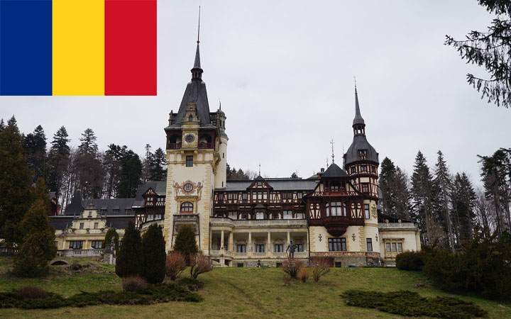
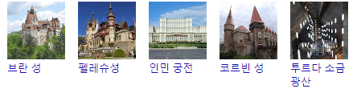

관광명소 :

언어: 루마니아어
기: 대한민국과 비슷하지만 조금 더 춥다. 해양과 많이 떨어져 있기 때문에 전형적인 대륙성 기후가 나타난다. 여름은 따뜻하거나 아주 덥기도 하며 보통 28도 정도이지만 일부 저지대의 경우 여름 내내 35도 이상이기도 하다. 해안가는 더 따뜻하며 찜통 더위가 없는 편이다. 겨울은 아주 추워서 보통 기온이 2도이며 최저 영하 15도로 떨어진다. 산기슭 지대일수록 이렇게 더 추워지는 경향이 두드러진다.
강우량은 한 해 750 mm 이상이다. 서쪽 지역의 가장 높은 산이 분포하는 곳의 경우 더 많이 내리기도 한다. 강설량이 많기 때문에 산악 지대의 리조트 산업이 발달해있다. 중남부 지방에는 강수량이 600mm로 떨어진다. 다뉴브 삼각주 인근의 지방은 더 비가 내리지 않아서 연간 강우량이 370mm에 불과하다.
국호: 루마니아
면적: 238,391km²
인구: 19,638,000명
수도: 베른
정치체제: 이원집정부제, 공화제, 양원제, 다당제
화폐단위: 루마니아 레우
환율: 1000KRW = 약 3.5REU